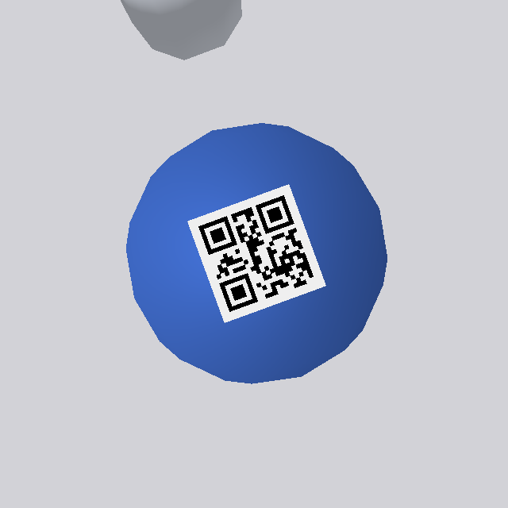

A robot for the least glamorous job in the lab.
Before a blood sample is analysed, someone has to sort it. SampleSort is an open-source attempt to hand that job to a small, inexpensive robot arm and a camera, and to be completely open about how well it works.
What it is
SampleSort is the software for a five-axis robot arm that sorts capped sample tubes. A camera above the bench finds every tube and works out what kind it is from the colour of its cap. A second camera on the wrist reads each tube's ID label. The arm then moves each tube into the rack where that kind belongs, and every attempt is written to a log that can be audited later.
Where it runs today
Everything on this page comes from a physics simulation (PyBullet) of the low-cost SO-101 arm. The same code also has a path to the physical arm and USB cameras. That path is tested against stand-ins but has not yet driven a real arm.
Why it matters
Hospital and research labs receive tubes in mixed batches from wards, clinics and couriers. Sorting them happens in the pre-analytical stage, which is where most laboratory errors are reported to start: wrong rack, wrong order, a missing ID. Large hospital labs use conveyor-based automation for this. Smaller labs and research groups usually sort by hand. SampleSort explores how much of that work a desktop arm and a webcam can do reliably.
- Shows its work. The 3D replay is the simulator's own recorded trajectory, and the page checks its kinematics against the Python code on every frame.
- Measured, failures included. Benchmarks report misses, retries and the conditions where it breaks, alongside the successes.
- Runs on a laptop.
pip install, no GPU, no robot needed, and about a minute to a first sorted tray.
- Arm
- SO-101, 5 axes + gripper
- Reach
- 350 mm
- Tubes
- 40 mm body, 12 mm cap
- Cameras
- overhead 640×480, wrist 640×640
A morning at specimen reception
An illustration of where a system like this fits. The steps are what the simulation does; the lab context around them is how a typical hospital lab works.
- 08:40A tray arrives. A courier brings a tray of mixed tubes from the morning ward round. It goes on the bench in the pickup zone.
- 08:40:05The camera surveys it. Every cap is found, classified by colour and located to about a millimetre. Two tubes that tipped over in transit are recognised from the outline of their caps.
- 08:40:08Each tube is identified. Just before each grasp, the wrist camera reads the tube's ID label, so the record ties the physical tube to the patient sample.
- 08:40:10Tubes go to their racks. Light-blue coagulation tubes go to their own rack, which a real lab would send on first: some clotting tests have to be run within a few hours of the draw.
- 08:41Problems are handled, not hidden. A missed grasp is noticed and retried after a fresh look. The fallen tubes are stood back up, then sorted.
- 08:42The tray is empty, and the log is complete. Every tube has a row: its ID, type, rack and slot, the time, and any failure on the way. That is the chain-of-custody record an accredited lab has to keep.
| Cap in the simulation | Real tube it stands for | Additive | Typical use | Rack |
|---|---|---|---|---|
| red | Red top (serum) | None / clot activator | Serology, some chemistry | A |
| blue | Light-blue top | Sodium citrate | Coagulation (PT/INR, aPTT) | B |
| green | Green top | Lithium heparin | Plasma chemistry | C |
| yellow | Gold top (SST) | Clot activator + gel | Serum chemistry | C |
The colours follow a widely used tube-manufacturer convention, but conventions vary between manufacturers and labs. A real deployment would read the tube type from the barcode as well as the cap. In SampleSort the mapping from colour to rack is one line of configuration per class.
What's on this page
Real moments from real runs.
Each picture is a moment from an actual run, snapshotted as it happened and rendered from the simulator's own state. Nothing is posed or retouched. Select any image to enlarge it.
Built for the bench, not the demo reel.
Each capability below runs in the simulator today, has tests behind it, and appears in one of the two runs above. Where something does not work, the limits section says so.

decoding…Every tube is identified before it is touched.
A wrist camera reads the QR label on each cap from the pre-grasp pose, 7 cm above it, where a 8.5 mm code fills the frame. The ID is written into the chain-of-custody log with the class, slot and outcome.
Knocked-over tubes get stood back up.
The overhead camera tells a fallen tube from a standing one by its outline. The arm picks it by the cap, carries it to a clear spot, checks which end is the body, and rights it.
Missed grasps are retried, not hidden.
The recovery run injects localisation error. When the gripper closes on nothing the controller
notices, logs grasp_missed, looks at the tube again and retries
from the fresh measurement. At 10 mm of noise that lifts completion from 87% to 97%.
Tested under light it was not tuned for.
Eleven lighting conditions, three detectors, four of the conditions held out from training.
Kinematics checked in your browser.
This page rebuilds the arm from its joint frames and compares every frame of the replay against the Python solver. The worst disagreement so far:
What breaks a colour detector, and what fixes it.
The HSV detector was tuned under one light. Here it faces eleven: brighter, dimmer, warmer, cooler, low sun with shadows, lens falloff — and four conditions outside anything the learned model saw in training. The same frames go to all three detectors.
Tubes found and correctly classified
Every condition at once
Tune the detector yourself.
This is the real overhead frame from the clean run, and the same HSV thresholding the detector uses, running in your browser. Loosen it and the table edges start to count as tubes; tighten it and caps disappear.
How much error it takes to fail.
Localisation noise is injected on purpose: 120 tubes per level, each trial with its own noise draw. Sorting accuracy holds well past the point where grasps begin to miss, because a missed grasp is detected and retried after a fresh look, and logged if it misses again, rather than placed in the wrong rack.
| σ | accuracy | grasp | complete |
|---|
Benchmark: samplesort benchmark --perception-noise N. A missed grasp is retried once, after a fresh look at the tube. Misses begin at 5 mm; past 10 mm noise eats the 18 mm grasp tolerance.
Six stages, each one a module you can read.
What it does not do yet.
simSimulation first
Every number on this page comes from PyBullet. The real-hardware path (SO-101 arm, USB cameras) is implemented and tested against fakes, not yet against a physical arm.
reachTubes outside the work area
One knocked-over tube in seventeen rolled 75 mm out of the work area, under the arm's base. Nothing reaches it there; the run reports it as left on the table.
lightColour still matters
All detectors rely on cap colour. Very low, warm, raking light still costs detections — see the held-out conditions in the lighting study.
policyLearned control is a pipeline, not a result
Record → train → evaluate with an ACT policy runs end to end. The tiny CPU-trained policy is not competitive with the scripted controller.
labelsSmall codes, close camera
8.5 mm QR labels are too small for the overhead camera; IDs come from the wrist camera only, one tube at a time.
tubesOne tube size
Geometry is configured per deployment in YAML. Mixed tube sizes in one run are not supported.
From clone to sorting in a minute.
No robot required. Python 3.10+, CPU only.